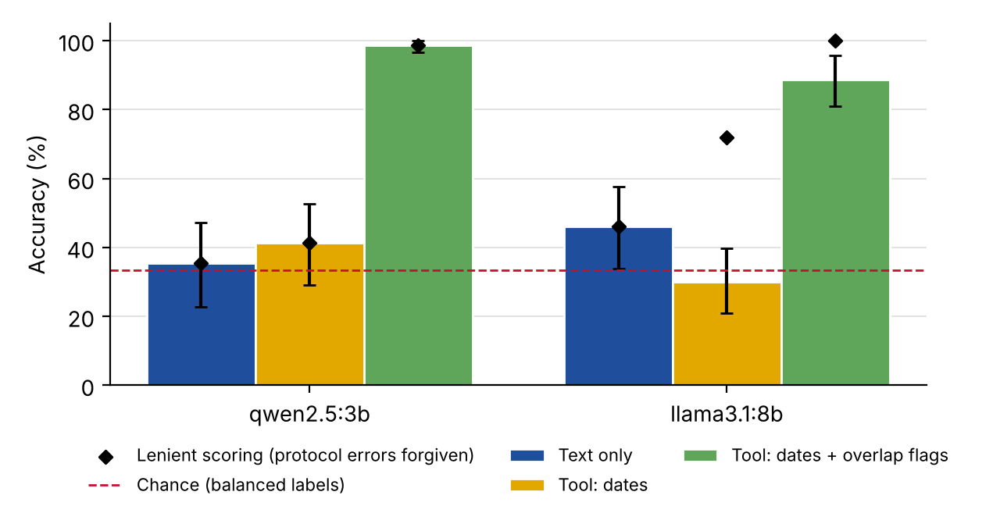

Experiment · Agentic AI · Tool use · Local LLMs
Small local AIs could not tell whether a date falls inside a period. A tool that said so fixed it
ChronoFact: when a small local model checks a claim such as "X was president of Y in 1865", what should its tool return?
By Muzammal Hussain · 18 November 2026 · Research update
Many facts hold only for a period: an office, a marriage, a club membership. A claim that places such a fact at a time is right if that time lies inside the period, wrong if it lies outside, and partly right if it crosses a boundary. An AI agent does not have to remember the period; it can look it up. I tested what else it needs. Two small models that run on a laptop checked the same 150 claims three ways: from memory, with a tool that returns the dates, and with a tool that also says whether the dates overlap.
Key findings
- From memory, both models were close to guessing. qwen2.5:3b was right on 35.3% and llama3.1:8b on 46.0%, against 33.3% by chance. qwen2.5:3b called 138 of the 150 claims wrong.
- Given the dates, they still could not compare them. With the claim's time span and the fact's period in hand, qwen2.5:3b still called 37 of 50 correct claims wrong (41.3% overall).
- A format slip hid most of one model's right answers. llama3.1:8b scored 30.0% because 79 times it ended with the word "classify" instead of "final". Its label was right in 63 of those 79 cases; counted fairly it reached 72.0%.
- The boundary was the hard part. Even then, llama3.1:8b got only 18 of the 50 partly overlapping claims right and called 28 of them fully correct.
- When the tool returned the overlap, both models were almost perfect. qwen2.5:3b reached 98.7% and llama3.1:8b 100% (88.7% if format slips count as errors).
Setup
The claims come from TimeStress, a public dataset of statements built from Wikidata facts, each labelled correct, incorrect or transitional (partly overlapping). After removing rows without a usable time or with dates before year 1, it has 500,108 rows from 1,982 facts; 86% are incorrect. I drew 150 rows, 50 per label, from 82 facts, and ran both models on the same rows through Ollama on a laptop, at temperature 0.
The three conditions used the same prompt and label definitions. In the memory condition the model saw only the statement. In the two tool conditions the agent had to call a tool for the fact's period, then a tool that compares it with the claim's time, and then answer. In one, the comparison tool returned only the two date spans; in the other, it also returned the number of overlapping days and three flags: fully inside, no overlap, partly overlapping. Intervals are 95% bootstrap intervals that resample whole facts.

Results
| Model | Condition | Accuracy | No valid answer | Format slips forgiven | Partly-overlapping claims right |
|---|---|---|---|---|---|
| qwen2.5:3b | Memory only | 35.3% | 0 | 35.3% | 0 of 50 |
| qwen2.5:3b | Tool returns dates | 41.3% | 1 | 41.3% | 2 of 50 |
| qwen2.5:3b | Tool returns dates and overlap | 98.7% | 1 | 98.7% | 49 of 50 |
| llama3.1:8b | Memory only | 46.0% | 0 | 46.0% | 5 of 50 |
| llama3.1:8b | Tool returns dates | 30.0% | 79 | 72.0% | 18 of 50 |
| llama3.1:8b | Tool returns dates and overlap | 88.7% | 17 | 100% | 50 of 50 |
The last column uses the forgiving score. On the same rows, the overlap flags fixed 86 claims for qwen2.5:3b and 88 for llama3.1:8b compared with dates alone, and broke none.
Where it goes wrong
The memory condition failed because small models do not hold the exact periods of thousands of facts. The dates condition shows that looking the period up is not enough: the models had both spans but could not reliably decide whether one lies inside the other, and failed most when a year straddles the start or end of a period. Once code had made that comparison, the model only had to read a flag, and both did.
The second lesson is about measuring agents. If every answer that breaks the expected format is counted as wrong, llama3.1:8b looks worse with dates than without them. It was not: it followed the tools correctly and named the right label, but used the wrong word for its final step. A strict score measures whether an agent follows the protocol; a forgiving score measures its judgement. Both are worth reporting.
What this means
If you build an agent that checks dates, whether in records, contracts, rosters or news, let code do the date arithmetic and have the tool return the answer to the comparison, not only the dates. A small local model is then enough to read it and report it. The overlap condition is not a test of reasoning, since the label follows from the flags; it shows what accuracy to expect when the tool is designed well.
Limitations
The sample is 150 claims from 82 facts, so intervals are wide, about 12 points either way for the memory and dates conditions. Two small models were tested once, with one prompt per condition; larger models or a step-by-step prompt may compare dates better. In TimeStress all partly overlapping claims are stated at year level. The labels follow Wikidata's dates; they do not check whether the historical fact itself is true.
Background: Ammar Khodja, Béchet, Brabant, Nasr and Lecorvé (2025), Factual knowledge in language models: robustness and anomalies under simple temporal context variations, Proceedings of the First Workshop on Large Language Model Memorization (L2M2), 1–22 (the TimeStress dataset); Gao et al. (2023), PAL: program-aided language models, ICML 2023; Schick et al. (2023), Toolformer: language models can teach themselves to use tools, NeurIPS 2023; Fatemi et al. (2025), Test of Time: a benchmark for evaluating LLMs on temporal reasoning, ICLR 2025.